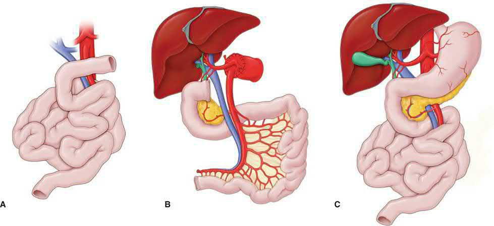

Intestinal and Multivisceral Transplantation
Summary
- Intestinal transplantation is not offered for intestinal failure itself but for the failure of the treatment for it. The indications are dominated by life-threatening complications of parenteral nutrition, progressive liver disease, recurrent catheter sepsis, and exhaustion of central venous access [1].
- The decision that shapes the operation is how much liver damage has already occurred: mild to moderate fibrosis may allow an isolated intestinal transplant, while severe fibrosis or cirrhosis necessitates a liver-containing graft [1].
- This page covers the indications, the assessment, and the newer indications that have widened the field.
Definition
IFALD is intestinal failure-associated liver disease [1].
Conventional central venous sites are defined as the internal jugular, subclavian and femoral veins [1].
Place of intestinal transplantation in Schwartz's account
Intestinal transplantation began after long-term parenteral nutrition arrived in the late 1970s, results were dismal for two decades until tacrolimus in the late 1980s, and it remains the least frequent transplant with the lowest graft survival because the gut's abundant lymphoid tissue makes it highly immunogenic (heavy immunosuppression yet high rejection) and its microbial colonisation risks translocation and systemic sepsis; through the 2000s home TPN outlived transplantation so it was only rescue therapy for life-threatening TPN complications, but recent survival now matches or exceeds home TPN in selected patients with better quality of life, making it a recognised treatment [2].
Pathophysiology
Patients on parenteral nutrition for a substantial time, or with ultra-short gut, are at high risk of developing IFALD [1].
The degree of liver impairment determines which organs are needed. Where fibrosis is mild to moderate, an isolated intestinal transplant may suffice, and this gives improved patient outcomes, better organ utilisation, and reversal of liver fibrosis once parenteral nutrition is discontinued [1]. Severe fibrosis or cirrhosis requires a liver-containing graft [1].
Hepatic cirrhosis with extensive portomesenteric thrombosis may make isolated liver transplantation technically impossible, so multivisceral transplantation is considered for some of these patients [1].
Clinical features
The clinical picture that brings a patient to assessment is that of intestinal failure on long-term parenteral nutrition, with one of three complications supervening: deteriorating liver biochemistry and histology, repeated line sepsis, or the running out of veins [1].
Aetiology
Newer indications have widened the field beyond intestinal failure. Transplantation is now used to facilitate resection of some tumours (desmoids and pseudomyxoma peritonei) where without it extensive evisceration would leave the patient dependent on parenteral nutrition [1].
Acute widespread splanchnic ischaemia, both arterial and venous, is a rare but growing indication for super-urgent intestinal and multivisceral transplantation, alongside other acute abdominal catastrophes [1].
Indications and causes of intestinal failure in Schwartz's account
- The indication is irreversible intestinal failure, multifactorial, depending on which small bowel is missing, whether the ileocaecal valve survives, whether there is a stoma and how much colon remains, with no fixed residual length, combined with TPN failure, defined as biochemical or histological liver injury, loss of central access with thrombosis of at least two central veins, frequent catheter infection or a single fungal infection, or recurrent severe dehydration despite intravenous supplementation [2].
- Paediatric causes are gastroschisis, midgut volvulus, atresia, necrotising enterocolitis, microvillus inclusion disease, Hirschsprung's disease, Crohn's disease and pseudo-obstruction; adult causes are visceral ischaemia from SMA or SMV thrombosis, Crohn's disease, trauma, mesenteric desmoids, radiation enteritis, massive resection for tumour, chronic pseudo-obstruction and autoimmune enteropathy [2].
- Severe TPN liver damage with portal hypertension calls for combined liver–intestine transplantation, while a multivisceral graft (liver, pancreas, stomach, duodenum and/or small bowel) suits children with diffuse dysmotility and adults with diffuse portomesenteric thrombosis, extensive desmoid disease encasing the visceral vessels with short gut, or massive abdominal trauma [2].
Diagnosis
Assessment of venous access and the degree of liver fibrosis is critical [1]. Patients at risk of IFALD need a liver biopsy as part of assessment, and detailed venous mapping is essential in all candidates [1].
Appropriate cardiovascular and respiratory assessment is necessary, upper and lower gastrointestinal endoscopy may be required, and cross-sectional imaging of the abdomen to assess the anatomy is central to operative planning [1].
Assessment requires a multidisciplinary team comprising transplant surgeons, intestinal failure physicians, transplant anaesthetists, hepatologists, psychiatrists or psychologists, radiologists, infectious disease physicians, transplant specialist nurses and dieticians [1].
Thresholds and severity
Limited central venous access is defined numerically: access limited to three major conventional sites in adults, above and below the diaphragm, or two major conventional sites above the diaphragm in children [1].
Severe sepsis as an indication means more than one life-threatening episode of catheter-related sepsis for which no remediable cause can be identified, or endocarditis or other metastatic infection [1].
Adults and children with a corrected GFR below 45 mL/min/m² are evaluated for simultaneous renal transplantation [1].
The UK indications are set out by NHS Blood and Transplant in seven groups [1]:
- 1. Life-threatening complications of parenteral nutrition, progressive IFALD or non-IFALD liver disease assessed by biochemistry and biopsy, with combined intestinal and liver transplant best considered where there is advanced liver disease; severe sepsis; or limited central venous access.
- [1] 2. Very poor quality of life thought likely to be correctable by transplantation. 3. Surgery to remove a large proportion of the abdominal viscera considered untenable without associated multivisceral transplantation, for example extensive desmoid disease or extensive critical mesenteric arterial disease.
- [1] 4. Localised malignancy amenable to curative resection requiring extensive evisceration, such as localised neuroendocrine tumours. Particular caution is exercised in this group, and patients should be discussed in a multidisciplinary multicentre forum, the National Adult Small Intestinal Transplant (NASIT) forum.
- [1] 5.
- Where the transplantation procedure is expected to preclude future intestinal transplantation, for example through loss of venous access or further HLA sensitisation. 6.
- Where subsequent intestinal transplantation is considered likely and the risk of death is increased by excluding the intestine from the graft, for instance predictable problems administering immunosuppression such as line sepsis, or continuing severe intestinal disease such as diabetic visceral neuropathy or ultra-short bowel syndrome, which may cause fluid, electrolyte and acid-base problems that would damage an existing or planned renal graft.
- [1] 7. Transplantation of additional organs for feasibility reasons, including renal transplantation where the corrected GFR is below 45 mL/min/m².
Treatment and Management
Where the indication is IFALD, the graft is chosen by the liver. An isolated intestinal transplant is preferred where fibrosis is mild to moderate, both for outcomes and for organ utilisation; severe fibrosis or cirrhosis mandates a liver-containing graft [1].
Immunosuppression and rejection follow the principles set out on the Immunosuppression and Transplant Immunology and Rejection pages; the small bowel is among the organs where endoscopic biopsy is the route for surveillance [3].
Procedural interventions
Operative planning rests on the cross-sectional imaging and the venous mapping obtained at assessment, since both the abdominal anatomy and the available venous access determine what is technically possible [1].
Where renal function is impaired below the GFR threshold, simultaneous renal transplantation is planned rather than deferred [1].

Graft types and operative detail in Schwartz's account
- An isolated graft is based on SMA inflow and SMV outflow isolated at the mesenteric root; a liver–intestine graft takes coeliac axis and SMA en bloc on an aortic patch with liver, duodenum, pancreas and small bowel, an intact hepatoduodenal ligament removing any need for biliary reconstruction and virtually eliminating biliary complications, and drains via hepatic veins to the recipient cava; isolated and liver–intestine grafts are divided proximally at the first part of the duodenum, multivisceral grafts including stomach at the distal oesophagus [2].
- Living donation, though uncommon, uses 150–200 cm of ileum on the ileocolic artery and vein for an isolated graft (anastomosed end-to-side to the recipient infrarenal aorta and cava) and, almost only in children, adds liver segments II and III implanted in standard fashion (left hepatic vein to cava, left hepatic artery to hepatic artery, left portal branch to portal trunk) with a very short 10–20 cm Roux loop to the donor ducts, a duodenum-to-donor-ileum anastomosis and a distal Bishop–Koop ileostomy [2].
- Recipient inflow is generally from the infrarenal aorta; isolated grafts drain systemically or portomesenterically, systemic drainage preferred for simplicity since splanchnic diversion causes metabolic abnormalities without proven clinical harm; continuity is restored with a gastrostomy or jejunostomy feeding tube and an ileostomy for endoscopic surveillance and biopsy, reversed after recovery; and abdominal wall closure is often the hardest step after many previous operations, scars, stomas, tubes and lost domain, frequently needing prosthetic mesh [2].
Complications
The complications that create the indication are also the ones that shorten the window for it: progressive liver fibrosis, repeated catheter-related sepsis including endocarditis and metastatic infection, and progressive loss of central venous access [1].
Loss of venous access and further HLA sensitisation are themselves reasons to transplant earlier, because either can preclude a future intestinal transplant altogether [1].
Rejection surveillance and complications in Schwartz's account
Intestinal grafts reject more than any other solid organ and have no serological marker, so frequent mucosal biopsy is essential; rejection damages the mucosa and lets endoluminal pathogens translocate into the circulation; protocols induce with polyclonal T-cell antibody and high-dose steroids then maintain with steroids and tacrolimus, TPN continues immediately after surgery and enteral feeding starts early but advances very cautiously over the weeks the graft takes to regain structure and function [2]. Common complications are intra-abdominal abscess, enteric leak, intra-abdominal sepsis, reoperation, graft thrombosis, life-threatening bleeding and central line problems, with immunosuppression-related rejection, PTLD, graft-versus-host disease, infection and malignancy; too little immunosuppression rejects, too much invites infection, PTLD and (less often) GVHD, all raising graft loss and mortality, and long-term results, though much improved, remain inferior to other abdominal transplants [2].
Outcomes
Isolated intestinal transplantation, where the liver still permits it, gives improved patient outcomes and better organ utilisation, and allows liver fibrosis to reverse once parenteral nutrition stops [1].
That is the argument for referring before the liver has decompensated rather than after, the same logic as the referral windows on the Dialysis Access and Biliary Atresia pages. [1]
References
- Bailey & Love's Short Practice of Surgery, 28th ed., Ch. 91 Intestinal and multivisceral transplantation
- Schwartz's Principles of Surgery, 11th ed., Ch. 11, Figs. 11-23 and 11-24
- Oxford Handbook of Clinical Surgery, 5th ed., Ch. 20 Transplantation
- Maingot's Abdominal Operations, 13th ed., Ch. 42